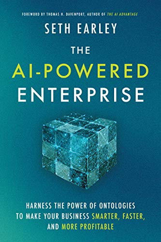

Generative AI
This book describes the importance of building an ontology to improve
the usefulness of Articial Intelligence.

The AI-Powered Enterprise: Harness the Power of Ontologies to Make Your Business Smarter, Faster, and More Profitable, by Seth Earley, 2020.
Building Your Connected Data Catalog, by Tony Seale, 2023.
Cloud Data Warehouse
Cloud Data Warehousing Volume I: Architecting Data Warehouse, Lakehouse, Mesh, and Fabric, by Barry Devlin, 2023.
Data Architecture (Data Warehouse, Data Lake, Data Lakehouse)
The Enterprise Big Data Lake: Delivering the Promise of Big Data and Data Science, by Alex Gorelik, 2019.
Building the Data Lakehouse by
Bill Inmon, Mary Levins, Ranjeet Srivastava, 2021.
The Unified Star Schema: An Agile and Resilient Approach to Data Warehouse and Analytics Design by Bill Inmon and Francesco Puppini, 2020
Data Mesh: Delivering Data-Driven Value at Scale by Zhamak Dehghani, 2022.